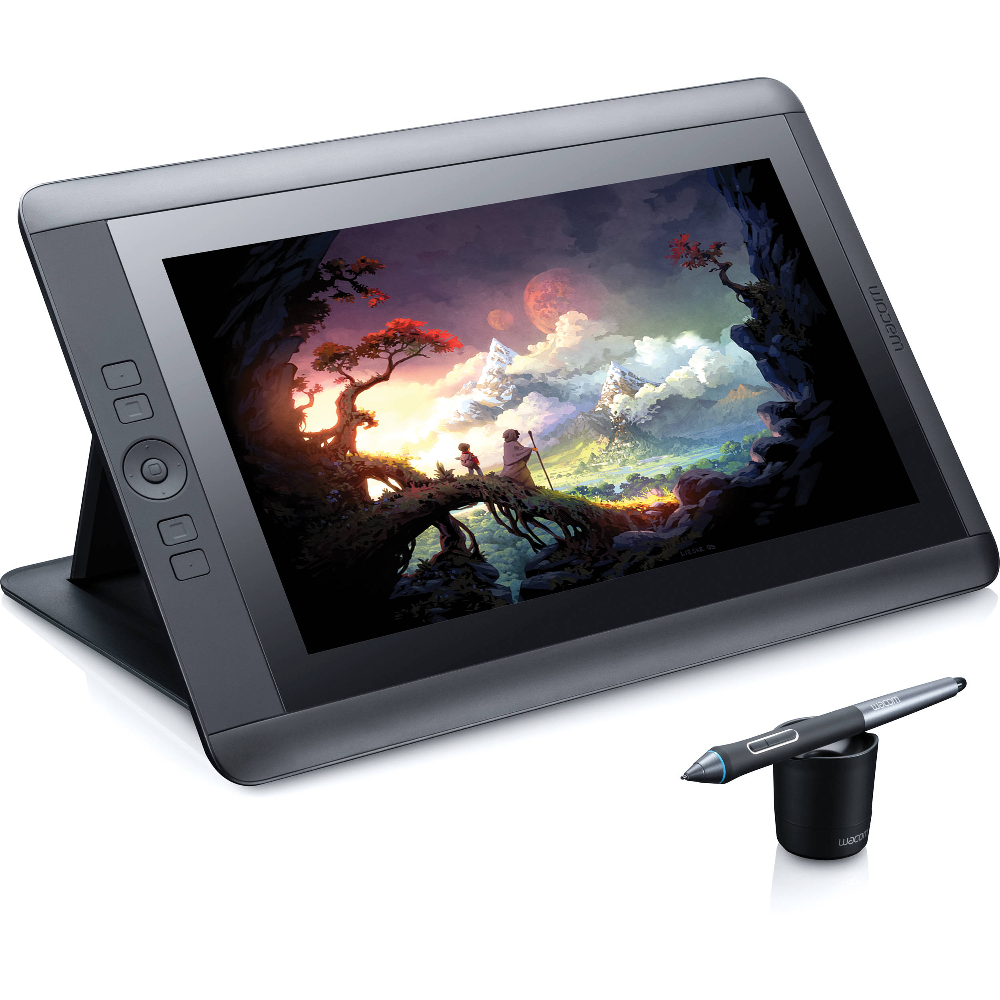

the state of digital drawing today

More recently, the Wacom company released its line of tablets in 2011, and has since come out with many other versions for different art types. Wacom was one of the first tablets that included a wireless stylus, and some versions have quick menu buttons for easy navigation. The Wacom Cintiq is one of the higher end tablets of the company. Released in 2013, this tablet also acts as its own device, and allows the user to draw directly on the screen and all of the necessary tools are visible as well. This tablet can be bought for $2500.
One of the cooler design advancements of digital drawing is the OSMO iPad accessory, released in 2014. Created by Pramod Sharma and Jerome Scholler of Google, the tablet is referred to as “reflective artificial intelligence” because the accessory reflects the iPad’s camera to show what is being made outside of the actual screen. It is very useful and interactive for children, allowing them to draw on paper and have it immediately transmitted into the OSMO app and reflected on the screen. This allows the advantage of those artists who feel more comfortable drawing on paper rather than on a tablet or screen. The future of digital drawing can only continue to advance, and OSMO is the latest technology that proves it.